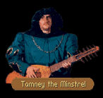

|
|
|  |
[CHAPTER 1]
[CHAPTER 2/3]
[CHAPTER 5] |
|
|
| CHAPTER 1 - FIRST ENCOUNTER |
|
Music drifted on the wind. At first believing himself losing his wits to the grind of travelling, Locklear paused, then picked out the very melodic strains of The Shores of Carse coming from a clump of trees near them. Abruptly the music stopped as an unhappy looking young man dropped out of a tree, his lute slung over back. TAMNEY: I've just come from Northwarden and I don't feel like playing for him anymore today. My fingers are numb, my mind empty, and my stomach grumbling. LOCKLEAR: Calm yourself. We haven't come from the castle. We're just travellers wandering through who heard your music and thought we would see who was responsible. So, what is a songbird doing among the falcons? TAMNEY: Expiring, I fear. Do you know that I can sing the love theme from Aelia and Tryphus, I can play most of the Rise of the Kingdom cycle and I know by heart the whole of the Tears of Valerinsis. But these men, these monsters only have one song they want to hear and they ask for it over and over --- The Old Man's Wind! A song about, about...eating beans! LOCKLEAR: Why do you stay here then? TAMNEY: I haven't the choice! While sharing a cask of ale with a friend, he told me of a small village where the wine was exceptionally strong and the ladies exceptionally thin. Once sobered, I resolved to take myself to this wondrous place and avail myself of its pleasures. To my horror, I found that my friend had mixed his metaphors and I was laid upon by a lady who could tear the teeth from a bull bare-handed. Before I could extricate myself from such humiliable circumstances, her father, a Baronet of some note, exiled me here to entertain for the Baron Gabot or else sacrifice my head. LOCKLEAR: I'm surprised he didn't have you beheaded... TAMNEY: Well, his daughter was less than maidenly and secondly, he hadn't his fealty to pay for the year. As the Baron Gabot is fond of music, they settled that I should make even the debt... I see that you are a noble of some note. If you could do me a favor, perhaps you could ease the stress of a minstrel's life. LOCKLEAR: Perhaps. What can you want? TAMNEY: A length of light bowstring. While it is not immediately useable to me, I have found a resin that can be applied to it that will allow me to restring my lute. I have a feeling that I may need new strings soon.
|
| STRING HELD | STRING NOT HELD |
|
LOCKLEAR:
As luck would have it, we have one with us and I imagine we can part with it. See REWARD below
|
LOCKLEAR:
I'm afraid we don't have one that we could lend you at the moment. Perhaps one of Baron Gabot's
soldiers can be of assistance to you. TAMNEY: Perhaps, though I doubt it. Farewell to you, gentlemen. LOCKLEAR: And to you, Tamney. We shall meet again, I believe.
|
| SECOND - STRING HELD | SECOND - STRING NOT HELD |
|
Tamney was nearby. Alerted by the jongleur's faint lute playing, Locklear called for him to come out from wherever he was hiding. Sulkily, the minstrel complied. TAMNEY: Oh...it is you! Did you manage to bring me back that bowstring I requested? OPTIONS BELOW
|
They were not alone. Locklear's pulse quickened as he saw the lone figure approach; but when it became apparent they were not being attacked, he relaxed a bit, squinted slightly in an attempt to see who was about to join them. TAMNEY: Oh...it's you three. Did you manage to bring me back that bowstring I requested? LOCKLEAR: I'm afraid we don't have one that we could lend you at the moment. Perhaps one of Baron Gabot's soldiers can be of assistance to you. TAMNEY: Perhaps, though I doubt it. Farewell to you, gentlemen. LOCKLEAR: And to you, Tamney. We shall meet again, I believe.
|
| YES | LIE |
|
See REWARD below
|
TAMNEY:
Too bad. Oh well, if you should find some any time soon, please bring it by and perhaps I can
sing a tune for you. You'll pardon me, but I have to go and practice a few tunes that the Baron
requested for dinner hour tomorrow night. LOCKLEAR: Good luck. Play well, bard.
|
| TAMNEY'S REWARD |
|
A favor for a favor then! Over the past few weeks there have been several sows stolen from
Northwarden, so I wrote this little song to commemorate the event. It's silly and short, but
I hope you like it. It's called Northwarden Pigs.
-- Northwarden Pigs --
TAMNEY: I bid you farewell then. Come and see me again. LOCKLEAR: If ever I come to Northwarden again, you can be assured of it. Good day.
|

| CHAPTER 2/3 |
| LESSON 1 - FIRST | LESSON 1 - SECOND |
|
Music drifted on the wind. At first believing himself losing his wits to the grind of travelling, James paused, then picked out the very melodic strains of The Fishwife's Daughter coming from a clump of trees near them. Abruptly the music stopped as an unhappy looking young man dropped out of a tree, his lute slung over back. TAMNEY: Please tell me he hasn't sent you. I'm too exhausted right now to play and I've run all the things I know into the ground. JAMES: Hmm. I've heard it's a dire day in the keep when the minstrel is without charm. What's bothering you? TAMNEY: When one of the Baron's new recruits asked for musical instruction, I heartily agreed, sacrificing my morning walks to make time for his lessons. We started immediately. I demonstrated for him a simple royal scale - ascending eighth notes, progression from Cabdicant to Acoronant in half steps, Kingdom time. Even after two weeks he couldn't find all the notes. He refuses to practice, he can't tell the difference between a tuned and untuned lute, and he patently refuses to learn how to read minstrel writs. I don't understand why he desired lessons at all. JAMES: Perhaps he thought it would be easier. TAMNEY: Everyone does. They believe you simply pick up an instrument and it magically makes sounds of its own accord without so much as a whit of your concentration. Learning music takes discipline, the same as learning how to use a sword. JAMES: Perhaps you could give us a lesson sometime. TAMNEY: You're in luck, I'm free just now and I've recently restringed my lute. There is, of course, the matter of a small fee which Baron Gabot imposes for services rendered outside of the garrison compliment. It would be seventy five sovereigns for the lesson. I realize it's a bit steep, but part of the cost covers the price of the practice lute itself. Do you still want the instruction?
|
Tamney was nearby. Alerted by the jongleur's faint lute playing, James called for him to come out from wherever he was hiding. Sulkily, the minstrel complied. TAMNEY: Have you changed your mind about the music lesson ? It's a handy thing to know how to play a lute when a lady flutters her eyes at you! Seventy five sovereigns may gain you a night in paradise. What do you say? SEE OPTIONS BELOW
|
| YES (enough) | YES (not enough) | NO |
|
JAMES:
We are your obedient pupils, musician. I already know where to find the notes on the lute, but
beyond that I'm completely in the dark. TAMNEY: I'm sure of it. You'll find a lute there behind you. Play all scale the notes from middle C to the G in quarter notes, playing only the coronant notes and then come back down to middle C again. Good. That is the royal scale. Now I want you to play the same scale but instead of playing E coronant, play the E abdicant. All the rest of the notes are the same. Exactly. That's the noble's scale. Together, the royal scale and the noble's scale are the basis of most of our music, though we occasionally use the empress or Keshian scale. The empress' scale is played by playing C coronant, D abdicant, E abdicant, progress to F coronant, G coronant, A abdicant, B coronant, and finally C coronant. I know it sounds complicated, but try it. You may master the lute yet. I want you to repeat the things that I've taught you for an hour every day. Once you can play those comfortably, we can have another lesson... Forgive me, but I have to go and prepare some songs for the Baron Gabot's dinner tomorrow night. Take care and keep practicing with your lute. JAMES: We shall. Thanks for the lesson.
|
JAMES:
I believe I may have spoken too soon. It seems that I didn't bring along sufficient funds for
the lesson. TAMNEY: I'm usually around here, so if you get the money, I'd be more than happy to instruct you. You'll have to forgive me but I have to go. I'm in the midst of preparing a new rendition of Her Eyes of Honey for the men. They didn't like my last arrangement. JAMES: Good luck with the rendition. We'll be back when we can.
|
JAMES:
I regret that we have obligations elsewhere. Perhaps another time, minstrel. TAMNEY: I'm usually around here, so if you get the money, I'd be more than happy to instruct you. You'll have to forgive me, but I must go and prepare a new rendition of Her Eyes of Honey for the men. They didn't like my last arrangement. JAMES: Good luck with the rendition. We'll be back when we can.
|
| LESSON 2 - FIRST | LESSON 2 - SECOND |
|
Music drifted on the wind. At first believing himself losing his wits to the grind of travelling, James paused, then picked out the very sorrowful strains of Sethanon, Bloody Sethanon coming from a clump of trees near them. Abruptly the music stopped as an unhappy looking young man dropped out of a tree, his lute slung over back. TAMNEY: I haven't seen you in a while. Have you three been practicing what I taught you before? JAMES: A little. We've been occupied with a search for the Nighthawks. Do you know anything about them? TAMNEY: I try not to know things about the Guild of Assassins. The greatly knowledgeable on the subject tend to rapidly progress to the greatly dead. Call me a coward, but I tend to stick to topics which don't endanger my life. JAMES: Understandable. Are you still giving your musical lessons? TAMNEY: Yes. Since you've already purchased your practice lute, its only twenty sovereigns this time around. Do you want more instruction?
|
Tamney was nearby. Alerted by the jongleur's faint lute playing, James called for him to come out from wherever he was hiding. Sulkily, the minstrel complied. TAMNEY: Have you changed your mind about the music lesson? I promise you'll learn enough to impress your friends at home. What do you say? SEE OPTIONS BELOW
|
| YES (enough) | YES (not enough) | NO |
|
JAMES:
We are at your command, musician. TAMNEY: Go ahead and use my spare lute. It's there behind you. Do me a favor and strum the strings. Ach, it's what I thought. I haven't gotten around to tuning it today. Okay, strum the top string. Since someone stole my tuning fork last week, we'll just have to call that string E. Now, put your finger on the fifth fret of the first string and strum the first and second strings together. Okay, that's good. The second string's in tune. Try doing the same thing with the second and third strings. The third string is a bit abdicant. Turn the tuning peg for the third string until the two strings are in harmony. Try the fourth string now. Good. The fifth string is a bit odd. Rather than putting your finger on the fifth fret, put your finger on the fourth fret of the forth string and strum the fourth and fifth. And the last string is tuned like the second string. Finger on the fifth fret, fifth string and strum the fifth and sixth. Excellent...unfortunately, I don't have time to teach you anything else but at least now you'll know how to tune your instrument - after all, if your lute is out of tune, how will anyone know you're playing the song correctly? Please forgive me, but I've got to get an arrangement put together before dinner time tomorrow night, so I have to go. Keep practicing. You're showing real promise. JAMES: We shall. Thanks for the lesson.
|
JAMES:
I believe I may have spoken too soon. It seems that I didn't bring along sufficient funds for
the lesson. TAMNEY: I'm usually around here, so if you get the money, I'd be more than happy to instruct you. You'll have to forgive me but I have to go. One of the men in the garrison brought me the entire libretto for The Reign of Overn Deep and I'm poring over it to see if I can simplify it enough for just one performer. It'll be a task, but I believe it might be done. JAMES: If any one can do it, I'm sure you can, Tamney. Good luck to you.
|
JAMES:
I regret that we have obligations elsewhere. Perhaps another time, minstrel. TAMNEY: I'm usually around here, so if you get the money, I'd be more than happy to instruct you. You'll have to forgive me, but I must go. One of the men in the garrison brought me the entire libretto for The Reign of Overn Deep and I'm poring over it to see if I can simplify it enough for just one performer. It'll be a task, but I believe it might be done. JAMES: If anyone can do it I'm sure you can. Good luck to you, Tamney.
|

James motioned to the figure across the room.
The man walked over to join them. He stood before them, shifting nervously.
TAMNEY:
I didn't expect to see...I didn't think anyone would...uh...
PATRUS:
...come after ya! Pah! I shoulda' known it. You come a prancin' into Northwarden with that
little twanging box of yours and you sing a blue streak about honor and glory, but when it
comes down to it, you ain't got the picture. Instead you got's this yella streak - ya never
stand and eyeball your problems face ta face, ya let other folks run you around. One day
somebody's gonna run your life right off a cliff.
TAMNEY:
I'm the one telling me to leave Northwarden. Me. That's Tamney the Minstrel's decision, not
someone else's. I'm making the decision to live.
PATRUS:
The moredhel done run you off an they ain't even got here yet. They done a better job on you
than any duke or baron you crossed swords with before. I'd not be in a castle with a coward
like you anyway.
TAMNEY:
That isn't fair. I'm a minstrel! What good would I be...I don't know how to use a sword, I
don't know how to heal wounds or direct a battle...I'd just be in the way. What good would I
be? I'm just...one...insignificant...man.
LOCKLEAR:
Not so insignificant, Tamney. Before I went to serve in Krondor, my father used to advise me:
When you have earned your title, make sure your minstrel is well paid. I hadn't a clue what
that meant until I saw the battles at Armengar and Highcastle and Sethanon and others since.
When men sit and listen to songs about great battles, they remember men like themselves have
faced terrible dangers and emerged alive and that gives them hope. Sometimes that's the only
thing that an army needs.
TAMNEY:
But why do they all have to depend on me? Why did fate arrange it that I was the minstrel who
happened to be at Northwarden?
LOCKLEAR:
We aren't going to force you to go, Tamney. It's your life, your decision. If you choose to
leave...that's your own business.
TAMNEY:
Could I request a favor of you before I make a final decision?
LOCKLEAR:
Anything, if it will set your feet back on the road to Northwarden.
TAMNEY:
There is a cave not too far from here that is known as the Diviner's Halls. Within, there are
several small stones - called pattern stones by geomancers - which can foretell a man's future.
If you return with one, I will make my decision.
PATRUS:
Geomancy! Shoulda figured you'd go in for that hozum-pozum... Just another way for somethin
else to make your hard decisions for you!
LOCKLEAR:
Quiet, Patrus. We will see what we can do, Tamney.
The man walked over to join them. He stood before them, eyebrows arched inquisitively.
TAMNEY:
Did you go to the Diviner's Halls? Did you bring back a pattern stone?
PATRUS:
Don't get yourself into a tiz, Tamney. We got your silly rocks... Now you walkin' back to
Northwarden or are we draggin' you?
TAMNEY:
I will walk back myself after...I've studied the rock. Tell Baron Gabot that I will be there
soon. I think he will be rather more relieved than you might imagine.
JAMES:
Oh? And why is that?
TAMNEY:
Before I was off from the castle, I had it in mind I wasn't to leave until I had at least made
some provisions that I could survive. Even assuming I slipped out of the castle without notice,
there was still the issue of how I would pay my way until I reached a safe haven. So, after a
bit of investigation, I found the treasury. It was being guarded by a fellow by the name of
Corbi, a fellow whose tryst with a certain girl by the name of Thea I have had the vicarious
pleasure of orchestrating over the past several months. Once I had convinced him that she was
awaiting him, it was a simple matter of slipping inside and grabbing up a pouch.
JAMES:
Not as if the Baron's missed a few golden sovereigns. I think he's involved with other things
at the moment...
TAMNEY:
Exactly as I was thinking, but it seems that what I picked up in the dark was worth rather more
than a few dozen sovereigns. Several hundreds more... Once I realized what I'd done, I became
terrified of going back.
JAMES:
I could see why, but when the Baron told us to come and get you, he made no mention of missing
money. It's entirely possible that no one has noticed the missing funds as yet. You can take
them back to him.
TAMNEY:
I can't. Even if I return them, the Baron will be aware that Corbi left his post open for me to
plunder. Though I can't say I've behaved much like a friend to him, I don't wish to betray him
twice with the same crime... Actually, I have something of an admission to make. He is the
reason why I asked you to retrieve the geomancy stones for me. They aren't worth much, even to
a gem's dealer, but they can be used to make an attractive stone for a wedding band.
JAMES:
For Corbi. Of course. So you've been considering returning all this time, but you wanted to
wait until you could cover all possibilities...
TAMNEY:
All but one. I was wondering if you would take the pouch of diamonds and hold on to it until
after the battle was over. This way, no one gets hurt and we can all do what we need to do.
Tell him you took them off a dead Nighthawk or something.
JAMES:
When you go back to the castle, its a possibility they will search you since your behavior has
been a little odd. I'll take the diamonds, but I'll worry about how I will tell him later. My
only concern is that you return immediately. We have other things we need to be doing for Duke
Martin.
TAMNEY:
Done. I'll see you all back at the castle.
JAMES:
Don't be too happy about this, Tamney. You and I will have a big score to settle on later.
Don't let yourself get killed getting back there.
The man walked over to join them. He stood before them, eyebrows arched inquisitively.
TAMNEY:
Did you bring a pattern stone?
JAMES:
We haven't found them yet. What do you think you'll find out from these rocks anyway?
TAMNEY:
Whether I will survive the battle at Northwarden or not. If not, I must send word to my
relatives.
JAMES:
And you honestly believe staring at a rock is going to tell you that? That's nearly the dumbest
thing I've ever heard.
LOCKLEAR:
He's got a right to stupid ideas. If he just wants to sit here and wait for a rock to tell him
that it's safe to come out into the daylight, that's all right by me. I say let him rot.
TAMNEY:
You're not going to humiliate me into making a decision, so you two might as well quit it. You
may be Seigneurs, but right now I have more respect for rocks than I do anything that the two
of you have to say. Goodbye.
JAMES:
Tamney, wait...
CHAPTER 5 - FIRST ENCOUNTER
[CHAPTER 5]
RETURN with Stones
RETURN without Stones
James motioned to the figure across the room.
James motioned to the figure across the room.